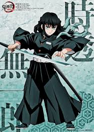
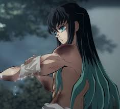

Halo, saya M Khaza Huwa Khairun
Breath of Mist: I'm a
Seorang Pilar (Hashira) teknologi, menciptakan kode yang mengalir seperti kabut, cepat, tak terduga, dan efektif, memberikan solusi yang tampak sederhana namun berdaya ledak.
Lihat Misi Kirim Pesan.jpg)
Ingatan Visual: Galeri Misi
.jpg)
.jpg)
.jpg)
.jpg)
.jpg)
.jpg)



Ingatan Saya (Tentang Saya)
.jpg)
Hello, I'm M Khaza Huwa Khairun, the Mist Hashira
Seperti **Pilar Kabut (Kasumi Hashira)**, pikiran saya mungkin kadang melayang seperti kabut, tetapi saat beraksi, saya mencapai fokus penuh dan eksekusi yang sempurna. Saya adalah pelajar berusia 16 tahun yang berfokus pada **efisiensi**, **minimalisme**, dan **presisi** dalam pemrograman.
Filosofi saya adalah **"Kabut yang Melindungi"**. Saya menciptakan solusi yang ringan dan tidak terduga. Gaya coding saya, **Kasumi no Kokyuu (Pernapasan Kabut)**, memanfaatkan teknik yang sederhana namun mampu mengalahkan masalah yang kompleks.
Bentuk Pernapasan (Layanan)
Bentuk Pertama: Web Development
Menciptakan front-end website yang halus, ringan, dan cepat dimuat.
Bentuk Kedua: Clean UI/UX Design
Desain antarmuka yang bersih dan minimalis, fokus pada fungsionalitas inti (seperti kabut).
Bentuk Ketiga: Logic Structuring
Pengembangan logika back-end yang terstruktur dan mudah dimengerti (membubarkan kabut).
Bentuk Keempat: Minimalist Framework
Menerapkan kerangka kerja (framework) sederhana untuk proyek-proyek kecil.
Bentuk Kelima: Haze of Logic (Obfuscation)
Melindungi data dan kode dengan teknik sederhana, membuatnya sulit dipahami (seperti hilang dalam kabut).
Bentuk Keenam: Lightning Deployment
Implementasi proyek yang cepat dan efisien ke server atau hosting.
Rekam Jejak Misi (Portfolio)
.jpg)
Kasumi no Kokyuu: Portfolio
Bentuk pertama yang menampilkan ingatan, keterampilan, dan misi Pilar Kabut ini.
Lihat Detail.jpg)
Mist Breathing Kalkulator
Aplikasi kalkulator sederhana, melatih akurasi logika secepat tebasan pedang.
Lihat Detail.jpg)
Haze of Numbers: Latih Fokus
Game interaktif kecil, melatih fokus dan kecepatan reaksi di tengah kabut.
Lihat Detail.jpg)
Sixth Form: Landing Page
Latihan desain web modern, mengalirkan tata letak yang ringan dan minimalis.
Lihat Detail.jpg)
Seventh Form: Login Form
Implementasi form login dengan validasi dasar. Ketepatan dalam otentikasi.
Lihat Detail
Mist Pillar's Schedule
Aplikasi daftar tugas sederhana, mengatur jadwal misi harian dengan detail.
Lihat DetailPesan Melalui Kasugai Crow
Email: khuwakhairun@gmail.com
Telepon: +62 859 2697 9906
Alamat: Batam, Indonesia
Instagram: m_khaza21